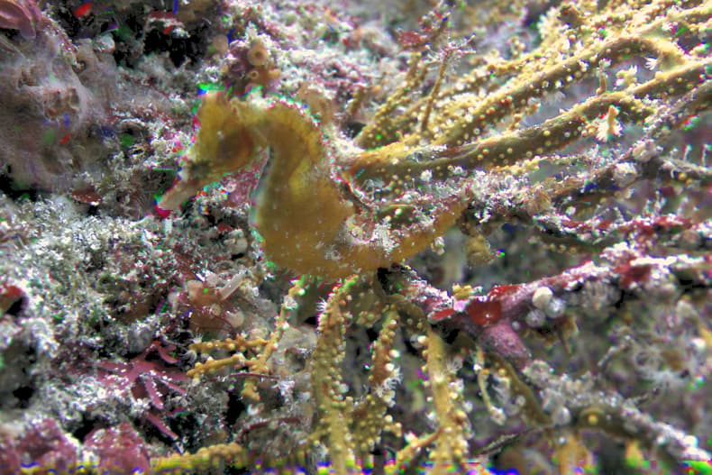
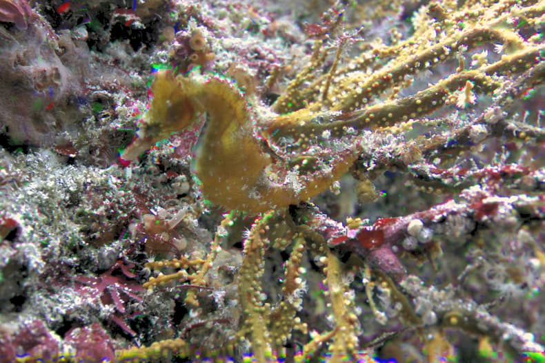

露光ブラケティング撮像を用いた水中画像の色補正
IEEE Signal Processing Letters (SPL), 2018 (impact factor in 2018: 2.813)
 

概要
水中では，可視光の中でも赤色の波長成分が最も減衰するため，水中画像には色ずれが生じる．また，水中画像の色ずれの大きさは，光の伝播距離に依存するため，水深やカメラと被写体の距離に応じて画像内の色ずれの大きさは変化する．色ずれが生じた水中画像では，色情報から水中生物や植物の特徴を得ることが困難なため，動植物の観察や種の特定といった用途に直接用いることが難しい．水中画像を色ずれのない白色光源下のシーンに再構成できれば，上述した応用先に利用することが可能となる．よって，本研究では，水中画像の色ずれを改善し，白色光源下におけるシーンに再構成することを目的とする．
提案手法では，複数照明色推定に基づき水中画像の色ずれを改善する．水中画像の色ずれは，複数の異なる色を持った照明が照射されることで，生じると考える．この仮定に基づき，推定した照明色を白色に変換することで水中画像の色補正を行う．
しかしながら，水中においては赤成分が著しく減衰するため，照明色の推定が困難である．
そこで，提案手法では露光の異なる画像を連続して取得する露光ブラケティング撮像により水中シーンを撮像する．長露光画像を用いることで，水中において最も減衰する赤成分を十分に取得することが可能となる．長露光画像において信号量が飽和しやすい緑青成分は，中・短露光画像から取得する．このように，異なる露光時間で撮影した画像から得られる情報を選択的に合成することにより，各色成分において，照明色推定を行うために十分な信号量を持つ水中画像を取得することができる．このような合成画像に照明色推定を行うことにより，水中画像の色ずれの補正を実現する．

ダウンロード
Underwater Image Color Correction using Exposure-Bracketing
Imaging
Kohei Nomura, Daisuke sugimura, Takayuki Hamamoto
IEEE Signal Processing Letters (SPL), Volume: 25, Issue: 6,
pp.893-897, June 2018.

引用: [BibTeX]
論文の内容やデータセットを用いる場合は，私たちの文献を引用して下さい．